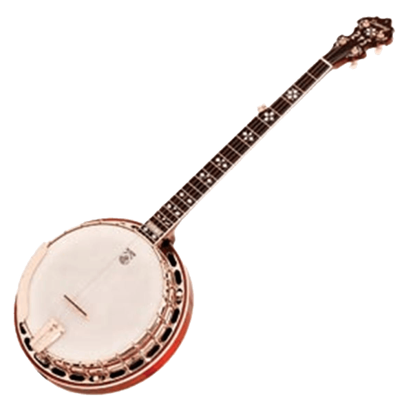

The Woodsmen is een vierkoppige Bluegrass-, Country-, Blues- en Folkformatie. De band maakt gebruik van allerlei tradionele instrumenten, zoals The Good Old Steel String, 5 String Banjo, Mandoline, Box Guitar & Upright Bass.
 Muzikaal grootgebracht met hele andere muziekstijlen dan deze, hebben de bandleden elkaar toch weten te vinden in deze Americana combinatie. En deze diverse muzikale herkomst is zeker te horen bij een optreden van The Woodsmen. Want naast dat de luisteraar getrakteerd wordt op onvervalste Bluegrass klassiekers, zijn er bijvoorbeeld ook countryversies van AC/DC en Bob Marley songs te horen wanneer The Woodsmen langskomen.
Deze songkeuze, in combinatie met het plezier wat de bandleden hebben in het samen musiceren voor publiek, maakt het zeker de moeite waard The Woodsmen een keertje te komen bekijken!